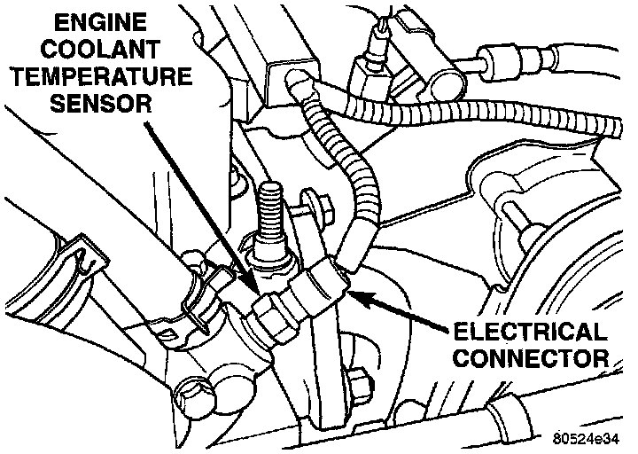

Component Testing
ENGINE COOLANT TEMPERATURE SENSORTo perform a complete test of the engine coolant temperature sensor and its circuitry, refer to Powertrain Management/Computers and Control Systems/Testing and Inspection.
Testing and Inspection
To test the sensor only, refer to the following:
Fig. 56 ECT Sensor:

1. Disconnect wire harness connector from coolant temperature sensor (Fig. 56).
CTS & IAT Resistance Chart Verses Temperature:

2. Test the resistance of the sensor with a high input impedance (digital) volt-ohmmeter. The resistance (as measured across the sensor terminals) should be as shown in the previous Coolant Temperature Sensor/Intake Air Temperature Sensor resistance chart. Replace the sensor if it is not within the range of resistance specified in the chart.
3. Test continuity of the wire harness between the Powertrain Control Module (PCM) wire harness connector and the coolant sensor connector terminals. Repair the wire harness if an open circuit is indicated.